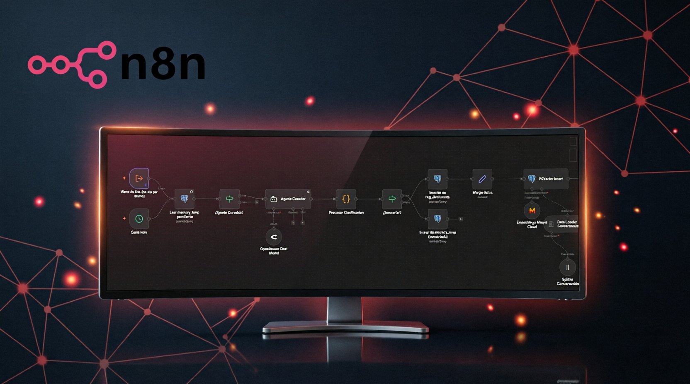
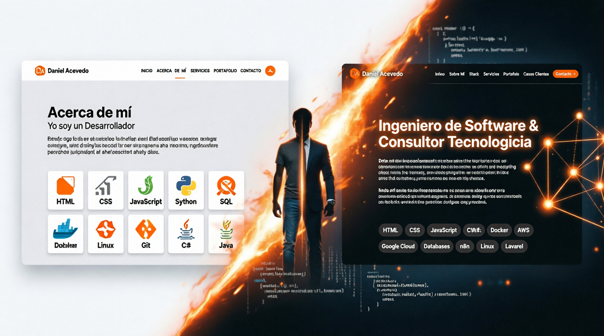

Resultados que Impactan
Historias reales de cómo la tecnología bien aplicada transforma
negocios y genera resultados medibles.

Automatización de Reportes vía WhatsApp con IA
Sistema por WhatsApp que recibe reportes en PDF, extrae los datos automáticamente con IA, los convierte a Excel y entrega el análisis — eliminando el procesamiento manual.

MVP de Gestión de Alumnos
Diseño y despliegue de un MVP para gestión de alumnos como proyecto universitario, con frontend y backend en instancias separadas de AWS, medidas básicas de seguridad y hosting con Cloudflare.

Portafolio Personal Multi-página
Remasterización completa de mi portafolio: de una sola página a un sitio multi-página, con formulario de contacto y tracking de visitas conectados a automatizaciones propias en n8n.

Plataforma de IA Conversacional
Desarrollo de una plataforma propia de inteligencia artificial tipo chat, documentando desde cero la infraestructura, base de datos y estructura del proyecto.
¿Tienes un desafío similar?
Hablemos de cómo puedo transformar tu negocio con tecnología.